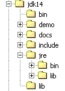

3. Classes et interfaces
3.1. L' objet par l'exemple
3.1.1. Généralités
Nous abordons maintenant, par l'exemple, la programmation objet. Un objet est une entité qui contient des données qui définissent son état (on les appelle des attributs ou propriétés) et des fonctions (on les appelle des méthodes). Un objet est créé selon un modèle qu'on appelle une classe :
public class C1{
type1 p1; // propriété p1
type2 p2; // propriété p2
…
type3 m3(…){ // méthode m3
…
}
type4 m4(…){ // méthode m4
…
}
…
}
A partir de la classe C1 précédente, on peut créer de nombreux objets O1, O2,… Tous auront les propriétés p1, p2,… et les méthodes m3, m4, … Ils auront des valeurs différentes pour leurs propriétés pi ayant ainsi chacun un état qui leur est propre.
Si O1 est un objet de type C1, O1.p1 désigne la propriété p1 de O1 et O1.m1 la méthode m1 de O1.
Considérons un premier modèle d'objet : la classe personne.
3.1.2. Définition de la classe personne
La définition de la classe personne sera la suivante :
import java.io.*;
public class personne{
// attributs
private String prenom;
private String nom;
private int age;
// méthode
public void initialise(String P, String N, int age){
this.prenom=P;
this.nom=N;
this.age=age;
}
// méthode
public void identifie(){
System.out.println(prenom+","+nom+","+age);
}
}
Nous avons ici la définition d'une classe, donc un type de donnée. Lorsqu'on va créer des variables de ce type, on les appellera des objets. Une classe est donc un moule à partir duquel sont construits des objets.
Les membres ou champs d'une classe peuvent être des données ou des méthodes (fonctions). Ces champs peuvent avoir l'un des trois attributs suivants :
privé : Un champ privé (private) n'est accessible que par les seules méthodes internes de la classe
public : Un champ public est accessible par toute fonction définie ou non au sein de la classe
protégé : Un champ protégé (protected) n'est accessible que par les seules méthodes internes de la classe ou d'un objet dérivé (voir ultérieurement le concept d'héritage).
En général, les données d'une classe sont déclarées privées alors que ses méthodes sont déclarées publiques. Cela signifie que l'utilisateur d'un objet (le programmeur)
a : n'aura pas accès directement aux données privées de l'objet
b : pourra faire appel aux méthodes publiques de l'objet et notamment à celles qui donneront accès à ses données privées.
La syntaxe de déclaration d'un objet est la suivante :
public class nomClasse{
private donnée ou méthode privée
public donnée ou méthode publique
protected donnée ou méthode protégée
}
Remarques
- L'ordre de déclaration des attributs private, protected et public est quelconque.
3.1.3. La méthode initialise
Revenons à notre classe personne déclarée comme :
import java.io.*;
public class personne{
// attributs
private String prenom;
private String nom;
private int age;
// méthode
public void initialise(String P, String N, int age){
this.prenom=P;
this.nom=N;
this.age=age;
}
// méthode
public void identifie(){
System.out.println(prenom+","+nom+","+age);
}
}
Quel est le rôle de la méthode initialise ? Parce que nom, prenom et age sont des données privées de la classe personne, les instructions
sont illégales. Il nous faut initialiser un objet de type personne via une méthode publique. C'est le rôle de la méthode initialise. On écrira :
L'écriture p1.initialise est légale car initialise est d'accès public.
3.1.4. L'opérateur new
La séquence d'instructions
est incorrecte. L'instruction
déclare p1 comme une référence à un objet de type personne. Cet objet n'existe pas encore et donc p1 n'est pas initialisé. C'est comme si on écrivait :
où on indique explicitement avec le mot clé null que la variable p1 ne référence encore aucun objet.
Lorsqu'on écrit ensuite
on fait appel à la méthode initialise de l'objet référencé par p1. Or cet objet n'existe pas encore et le compilateur signalera l'erreur. Pour que p1 référence un objet, il faut écrire :
Cela a pour effet de créer un objet de type personne non encore initialisé : les attributs nom et prenom qui sont des références d'objets de type String auront la valeur null, et age la valeur 0. Il y a donc une initialisation par défaut. Maintenant que p1 référence un objet, l'instruction d'initialisation de cet objet
est valide.
3.1.5. Le mot clé this
Regardons le code de la méthode initialise :
public void initialise(String P, String N, int age){
this.prenom=P;
this.nom=N;
this.age=age;
}
L'instruction this.prenom=P signifie que l'attribut prenom de l'objet courant (this) reçoit la valeur P. Le mot clé this désigne l'objet courant : celui dans lequel se trouve la méthode exécutée. Comment le connaît-on ? Regardons comment se fait l'initialisation de l'objet référencé par p1 dans le programme appelant :
C'est la méthode initialise de l'objet p1 qui est appelée. Lorsque dans cette méthode, on référence l'objet this, on référence en fait l'objet p1. La méthode initialise aurait aussi pu être écrite comme suit :
public void initialise(String P, String N, int age){
prenom=P;
nom=N;
this.age=age;
}
Lorsqu'une méthode d'un objet référence un attribut A de cet objet, l'écriture this.A est implicite. On doit l'utiliser explicitement lorsqu'il y a conflit d'identificateurs. C'est le cas de l'instruction :
this.age=age;
où age désigne un attribut de l'objet courant ainsi que le paramètre age reçu par la méthode. Il faut alors lever l'ambiguïté en désignant l'attribut age par this.age.
3.1.6. Un programme de test
Voici un programme de test :
public class test1{
public static void main(String arg[]){
personne p1=new personne();
p1.initialise("Jean","Dupont",30);
p1.identifie();
}
}
La classe personne est définie dans le fichier source personne.java et est compilée :
E:\data\serge\JAVA\BASES\OBJETS\2>javac personne.java
E:\data\serge\JAVA\BASES\OBJETS\2>dir
10/06/2002 09:21 473 personne.java
10/06/2002 09:22 835 personne.class
10/06/2002 09:23 165 test1.java
Nous faisons de même pour le programme de test :
E:\data\serge\JAVA\BASES\OBJETS\2>javac test1.java
E:\data\serge\JAVA\BASES\OBJETS\2>dir
10/06/2002 09:21 473 personne.java
10/06/2002 09:22 835 personne.class
10/06/2002 09:23 165 test1.java
10/06/2002 09:25 418 test1.class
On peut s'étonner que le programme test1.java n'importe pas la classe personne avec une instruction :
Lorsque le compilateur rencontre dans le code source une référence de classe non définie dans ce même fichier source, il recherche la classe à divers endroits :
- dans les paquetages importés par les instructions import
- dans le répertoire à partir duquel le compilateur a été lancé
Dans notre exemple, le compilateur a été lancé depuis le répertoire contenant le fichier personne.class, ce qui explique qu'il a trouvé la définition de la classe personne. Mettre dans ce cas de figure une instruction import provoque une erreur de compilation :
E:\data\serge\JAVA\BASES\OBJETS\2>javac test1.java
test1.java:1: '.' expected
import personne;
^
1 error
Pour éviter cette erreur mais pour rappeler que la classe personne doit être importée, on écrira à l'avenir en début de programme :
Nous pouvons maintenant exécuter le fichier test1.class :
Il est possible de rassembler plusieurs classes dans un même fichier source. Rassemblons ainsi les classes personne et test1 dans le fichier source test2.java. La classe test1 est renommée test2 pour tenir compte du changement du nom du fichier source :
// paquetages importés
import java.io.*;
class personne{
// attributs
private String prenom; // prénom de ma personne
private String nom; // son nom
private int age; // son âge
// méthode
public void initialise(String P, String N, int age){
this.prenom=P;
this.nom=N;
this.age=age;
}//initialise
// méthode
public void identifie(){
System.out.println(prenom+","+nom+","+age);
}//identifie
}//classe
public class test2{
public static void main(String arg[]){
personne p1=new personne();
p1.initialise("Jean","Dupont",30);
p1.identifie();
}
}
On notera que la classe personne n'a plus l'attribut public. En effer, dans un fichier source java, seule une classe peut avoir l'attribut public. C'est celle qui a la fonction main. Par ailleurs, le fichier source doit porter le nom de cette dernière. Compilons le fichier test2.java :
E:\data\serge\JAVA\BASES\OBJETS\3>dir
10/06/2002 09:36 633 test2.java
E:\data\serge\JAVA\BASES\OBJETS\3>javac test2.java
E:\data\serge\JAVA\BASES\OBJETS\3>dir
10/06/2002 09:36 633 test2.java
10/06/2002 09:41 832 personne.class
10/06/2002 09:41 418 test2.class
On remarquera qu'un fichier .class a été généré pour chacune des classes présentes dans le fichier source. Exécutons maintenant le fichier test2.class :
Par la suite, on utilisera indifféremment les deux méthodes :
- classes rassemblées dans un unique fichier source
- une classe par fichier source
3.1.7. Une autre méthode initialise
Considérons toujours la classe personne et rajoutons-lui la méthode suivante :
public void initialise(personne P){
prenom=P.prenom;
nom=P.nom;
this.age=P.age;
}
On a maintenant deux méthodes portant le nom initialise : c'est légal tant qu'elles admettent des paramètres différents. C'est le cas ici. Le paramètre est maintenant une référence P à une personne. Les attributs de la personne P sont alors affectés à l'objet courant (this). On remarquera que la méthode initialise a un accès direct aux attributs de l'objet P bien que ceux-ci soient de type private. C'est toujours vrai : les méthodes d'un objet O1 d'une classe C a toujours accès aux attributs privés des autres objets de la même classe C.
Voici un test de la nouvelle classe personne :
// import personne;
import java.io.*;
public class test1{
public static void main(String arg[]){
personne p1=new personne();
p1.initialise("Jean","Dupont",30);
System.out.print("p1=");
p1.identifie();
personne p2=new personne();
p2.initialise(p1);
System.out.print("p2=");
p2.identifie();
}
}
et ses résultats :
3.1.8. Constructeurs de la classe personne
Un constructeur est une méthode qui porte le nom de la classe et qui est appelée lors de la création de l'objet. On s'en sert généralement pour l'initialiser. C'est une méthode qui peut accepter des arguments mais qui ne rend aucun résultat. Son prototype ou sa définition ne sont précédés d'aucun type (même pas void).
Si une classe a un constructeur acceptant n arguments argi, la déclaration et l'initialisation d'un objet de cette classe pourra se faire sous la forme :
classe objet =new classe(arg1,arg2, ... argn);
ou
classe objet;
…
objet=new classe(arg1,arg2, ... argn);
Lorsqu'une classe a un ou plusieurs constructeurs, l'un de ces constructeurs doit être obligatoirement utilisé pour créer un objet de cette classe. Si une classe C n'a aucun constructeur, elle en a un par défaut qui est le constructeur sans paramètres : public C(). Les attributs de l'objet sont alors initialisés avec des valeurs par défaut. C'est ce qui s'est passé lorsque dans les programmes précédents, on avait écrit :
Créons deux constructeurs à notre classe personne :
public class personne{
// attributs
private String prenom;
private String nom;
private int age;
// constructeurs
public personne(String P, String N, int age){
initialise(P,N,age);
}
public personne(personne P){
initialise(P);
}
// méthode
public void initialise(String P, String N, int age){
this.prenom=P;
this.nom=N;
this.age=age;
}
public void initialise(personne P){
this.prenom=P.prenom;
this.nom=P.nom;
this.age=P.age;
}
// méthode
public void identifie(){
System.out.println(prenom+","+nom+","+age);
}
}
Nos deux constructeurs se contentent de faire appel aux méthodes initialise correspondantes. On rappelle que lorsque dans un constructeur, on trouve la notation initialise(P) par exemple, le compilateur traduit par this.initialise(P). Dans le constructeur, la méthode initialise est donc appelée pour travailler sur l'objet référencé par this, c'est à dire l'objet courant, celui qui est en cours de construction.
Voici un programme de test :
// import personne;
import java.io.*;
public class test1{
public static void main(String arg[]){
personne p1=new personne("Jean","Dupont",30);
System.out.print("p1=");
p1.identifie();
personne p2=new personne(p1);
System.out.print("p2=");
p2.identifie();
}
}
et les résultats obtenus :
3.1.9. Les références d'objets
Nous utilisons toujours la même classe personne. Le programme de test devient le suivant :
// import personne;
import java.io.*;
public class test1{
public static void main(String arg[]){
// p1
personne p1=new personne("Jean","Dupont",30);
System.out.print("p1="); p1.identifie();
// p2 référence le même objet que p1
personne p2=p1;
System.out.print("p2="); p2.identifie();
// p3 référence un objet qui sera une copie de l'objet référencé par p1
personne p3=new personne(p1);
System.out.print("p3="); p3.identifie();
// on change l'état de l'objet référencé par p1
p1.initialise("Micheline","Benoît",67);
System.out.print("p1="); p1.identifie();
// comme p2=p1, l'objet référencé par p2 a du changer d'état
System.out.print("p2="); p2.identifie();
// comme p3 ne référence pas le même objet que p1, l'objet référencé par p3 n'a pas du changer
System.out.print("p3="); p3.identifie();
}
}
Les résultats obtenus sont les suivants :
p1=Jean,Dupont,30
p2=Jean,Dupont,30
p3=Jean,Dupont,30
p1=Micheline,Benoît,67
p2=Micheline,Benoît,67
p3=Jean,Dupont,30
Lorsqu'on déclare la variable p1 par
p1 référence l'objet personne("Jean","Dupont",30) mais n'est pas l'objet lui-même. En C, on dirait que c'est un pointeur, c.a.d. l'adresse de l'objet créé. Si on écrit ensuite :
Ce n'est pas l'objet personne("Jean","Dupont",30) qui est modifié, c'est la référence p1 qui change de valeur. L'objet personne("Jean","Dupont",30) sera "perdu" s'il n'est référencé par aucune autre variable.
Lorsqu'on écrit :
on initialise le pointeur p2 : il "pointe" sur le même objet (il désigne le même objet) que le pointeur p1. Ainsi si on modifie l'objet "pointé" (ou référencé) par p1, on modifie celui référencé par p2.
Lorsqu'on écrit :
il y a création d'un nouvel objet, copie de l'objet référencé par p1. Ce nouvel objet sera référencé par p3. Si on modifie l'objet "pointé" (ou référencé) par p1, on ne modifie en rien celui référencé par p3. C'est ce que montrent les résultats obtenus.
3.1.10. Les objets temporaires
Dans une expression, on peut faire appel explicitement au constructeur d'un objet : celui-ci est construit, mais nous n'y avons pas accès (pour le modifier par exemple). Cet objet temporaire est construit pour les besoins d'évaluation de l'expression puis abandonné. L'espace mémoire qu'il occupait sera automatiquement récupéré ultérieurement par un programme appelé "ramasse-miettes" dont le rôle est de récupérer l'espace mémoire occupé par des objets qui ne sont plus référencés par des données du programme.
Considérons l'exemple suivant :
// import personne;
public class test1{
public static void main(String arg[]){
new personne(new personne("Jean","Dupont",30)).identifie();
}
}
et modifions les constructeurs de la classe personne afin qu'ils affichent un message :
// constructeurs
public personne(String P, String N, int age){
System.out.println("Constructeur personne(String, String, int)");
initialise(P,N,age);
}
public personne(personne P){
System.out.println("Constructeur personne(personne)");
initialise(P);
}
Nous obtenons les résultats suivants :
montrant la construction successive des deux objets temporaires.
3.1.11. Méthodes de lecture et d'écriture des attributs privés
Nous rajoutons à la classe personne les méthodes nécessaires pour lire ou modifier l'état des attributs des objets :
public class personne{
private String prenom;
private String nom;
private int age;
public personne(String P, String N, int age){
this.prenom=P;
this.nom=N;
this.age=age;
}
public personne(personne P){
this.prenom=P.prenom;
this.nom=P.nom;
this.age=P.age;
}
public void identifie(){
System.out.println(prenom+","+nom+","+age);
}
// accesseurs
public String getPrenom(){
return prenom;
}
public String getNom(){
return nom;
}
public int getAge(){
return age;
}
//modifieurs
public void setPrenom(String P){
this.prenom=P;
}
public void setNom(String N){
this.nom=N;
}
public void setAge(int age){
this.age=age;
}
}
Nous testons la nouvelle classe avec le programme suivant :
// import personne;
public class test1{
public static void main(String[] arg){
personne P=new personne("Jean","Michelin",34);
System.out.println("P=("+P.getPrenom()+","+P.getNom()+","+P.getAge()+")");
P.setAge(56);
System.out.println("P=("+P.getPrenom()+","+P.getNom()+","+P.getAge()+")");
}
}
et nous obtenons les résultats suivants :
3.1.12. Les méthodes et attributs de classe
Supposons qu'on veuille compter le nombre d'objets personne créées dans une application. On peut soi-même gérer un compteur mais on risque d'oublier les objets temporaires qui sont créés ici ou là. Il semblerait plus sûr d'inclure dans les constructeurs de la classe personne, une instruction incrémentant un compteur. Le problème est de passer une référence de ce compteur afin que le constructeur puisse l'incrémenter : il faut leur passer un nouveau paramètre. On peut aussi inclure le compteur dans la définition de la classe. Comme c'est un attribut de la classe elle-même et non d'un objet particulier de cette classe, on le déclare différemment avec le mot clé static :
Pour le référencer, on écrit personne.nbPersonnes pour montrer que c'est un attribut de la classe personne elle-même. Ici, nous avons créé un attribut privé auquel on n'aura pas accès directement en-dehors de la classe. On crée donc une méthode publique pour donner accès à l'attribut de classe nbPersonnes. Pour rendre la valeur de nbPersonnes la méthode n'a pas besoin d'un objet particulier : en effet nbPersonnes n'est pas l'attribut d'un objet particulier, il est l'attribut de toute une classe. Aussi a-t-on besoin d'une méthode de classe déclarée elle aussi static :
qui de l'extérieur sera appelée avec la syntaxe personne.getNbPersonnes(). Voici un exemple.
La classe personne devient la suivante :
public class personne{
// attribut de classe
private static long nbPersonnes=0;
// attributs d'objets
…
// constructeurs
public personne(String P, String N, int age){
initialise(P,N,age);
nbPersonnes++;
}
public personne(personne P){
initialise(P);
nbPersonnes++;
}
// méthode
…
// méthode de classe
public static long getNbPersonnes(){
return nbPersonnes;
}
}// class
Avec le programme suivant :
// import personne;
public class test1{
public static void main(String arg[]){
personne p1=new personne("Jean","Dupont",30);
personne p2=new personne(p1);
new personne(p1);
System.out.println("Nombre de personnes créées : "+personne.getNbPersonnes());
}// main
}//test1
on obtient les résultats suivants :
3.1.13. Passage d'un objet à une fonction
Nous avons déjà dit que Java passait les paramètres effectifs d'une fonction par valeur : les valeurs des paramètres effectifs sont recopiées dans les paramètres formels. Une fonction ne peut donc modifier les paramètres effectifs.
Dans le cas d'un objet, il ne faut pas se laisser tromper par l'abus de langage qui est fait systématiquement en parlant d'objet au lieu de référence d'objet. Un objet n'est manipulé que via une référence (un pointeur) sur lui. Ce qui est donc transmis à une fonction, n'est pas l'objet lui-même mais une référence sur cet objet. C'est donc la valeur de la référence et non la valeur de l'objet lui-même qui est dupliquée dans le paramètre formel : il n'y a pas construction d'un nouvel objet.
Si une référence d'objet R1 est transmise à une fonction, elle sera recopiée dans le paramètre formel correspondant R2. Aussi les références R2 et R1 désignent-elles le même objet. Si la fonction modifie l'objet pointé par R2, elle modifie évidemment celui référencé par R1 puisque c'est le même.

C'est ce que montre l'exemple suivant :
// import personne;
public class test1{
public static void main(String arg[]){
personne p1=new personne("Jean","Dupont",30);
System.out.print("Paramètre effectif avant modification : ");
p1.identifie();
modifie(p1);
System.out.print("Paramètre effectif après modification : ");
p1.identifie();
}// main
private static void modifie(personne P){
System.out.print("Paramètre formel avant modification : ");
P.identifie();
P.initialise("Sylvie","Vartan",52);
System.out.print("Paramètre formel après modification : ");
P.identifie();
}// modifie
}// class
La méthode modifie est déclarée static parce que c'est une méthode de classe : on n'a pas à la préfixer par un objet pour l'appeler. Les résultats obtenus sont les suivants :
Constructeur personne(String, String, int)
Paramètre effectif avant modification : Jean,Dupont,30
Paramètre formel avant modification : Jean,Dupont,30
Paramètre formel après modification : Sylvie,Vartan,52
Paramètre effectif après modification : Sylvie,Vartan,52
On voit qu'il n'y a construction que d'un objet : celui de la personne p1 de la fonction main et que l'objet a bien été modifié par la fonction modifie.
3.1.14. Encapsuler les paramètres de sortie d'une fonction dans un objet
A cause du passage de paramètres par valeur, on ne sait pas écrire en Java une fonction qui aurait des paramètres de sortie de type int par exemple car on ne sait pas passer la référence d'un type int qui n'est pas un objet. On peut alors créer une classe encapsulant le type int :
public class entieres{
private int valeur;
public entieres(int valeur){
this.valeur=valeur;
}
public void setValue(int valeur){
this.valeur=valeur;
}
public int getValue(){
return valeur;
}
}
La classe précédente a un constructeur permettant d'initialiser un entier et deux méthodes permettant de lire et modifier la valeur de cet entier. On teste cette classe avec le programme suivant :
// import entieres;
public class test2{
public static void main(String[] arg){
entieres I=new entieres(12);
System.out.println("I="+I.getValue());
change(I);
System.out.println("I="+I.getValue());
}
private static void change(entieres entier){
entier.setValue(15);
}
}
et on obtient les résultats suivants :
3.1.15. Un tableau de personnes
Un objet est une donnée comme une autre et à ce titre plusieurs objets peuvent être rassemblés dans un tableau :
// import personne;
public class test1{
public static void main(String arg[]){
personne[] amis=new personne[3];
System.out.println("----------------");
amis[0]=new personne("Jean","Dupont",30);
amis[1]=new personne("Sylvie","Vartan",52);
amis[2]=new personne("Neil","Armstrong",66);
int i;
for(i=0;i<amis.length;i++)
amis[i].identifie();
}
}
L'instruction personne[] amis=new personne[3]; crée un tableau de 3 éléments de type personne. Ces 3 éléments sont initialisés ici avec la valeur null, c.a.d. qu'ils ne référencent aucun objet. De nouveau, par abus de langage, on parle de tableau d'objets alors que ce n'est qu'un tableau de références d'objets. La création du tableau d'objets, tableau qui est un objet lui-même (présence de new) ne crée donc en soi aucun objet du type de ses éléments : il faut le faire ensuite.
On obtient les résultats suivants :
----------------
Constructeur personne(String, String, int)
Constructeur personne(String, String, int)
Constructeur personne(String, String, int)
Jean,Dupont,30
Sylvie,Vartan,52
Neil,Armstrong,66
3.2. L'héritage par l'exemple
3.2.1. Généralités
Nous abordons ici la notion d'héritage. Le but de l'héritage est de "personnaliser" une classe existante pour qu'elle satisfasse à nos besoins. Supposons qu'on veuille créer une classe enseignant : un enseignant est une personne particulière. Il a des attributs qu'une autre personne n'aura pas : la matière qu'il enseigne par exemple. Mais il a aussi les attributs de toute personne : prénom, nom et âge. Un enseignant fait donc pleinement partie de la classe personne mais a des attributs supplémentaires. Plutôt que d'écrire une classe enseignant en partant de rien, on préfèrerait reprendre l'acquis de la classe personne qu'on adapterait au caractère particulier des enseignants. C'est le concept d'héritage qui nous permet cela.
Pour exprimer que la classe enseignant hérite des propriétés de la classe personne, on écrira :
public class enseignant extends personne
personne est appelée la classe parent (ou mère) et enseignant la classe dérivée (ou fille). Un objet enseignant a toutes les qualités d'un objet personne : il a les mêmes attributs et les mêmes méthodes. Ces attributs et méthodes de la classe parent ne sont pas répétées dans la définition de la classe fille : on se contente d'indiquer les attributs et méthodes rajoutés par la classe fille :
class enseignant extends personne{
// attributs
private int section;
// constructeur
public enseignant(String P, String N, int age,int section){
super(P,N,age);
this.section=section;
}
}
Nous supposons que la classe personne est définie comme suit :
public class personne{
private String prenom;
private String nom;
private int age;
public personne(String P, String N, int age){
this.prenom=P;
this.nom=N;
this.age=age;
}
public personne(personne P){
this.prenom=P.prenom;
this.nom=P.nom;
this.age=P.age;
}
public String identite(){
return "personne("+prenom+","+nom+","+age+")";
}
// accesseurs
public String getPrenom(){
return prenom;
}
public String getNom(){
return nom;
}
public int getAge(){
return age;
}
//modifieurs
public void setPrenom(String P){
this.prenom=P;
}
public void setNom(String N){
this.nom=N;
}
public void setAge(int age){
this.age=age;
}
}
La méthode identifie a été légèrement modifiée pour rendre une chaîne de caractères identifiant la personne et porte maintenant le nom identite. Ici la classe enseignant rajoute aux méthodes et attributs de la classe personne :
- un attribut section qui est le n° de section auquel appartient l'enseignant dans le corps des enseignants (une section par discipline en gros)
- un nouveau constructeur permettant d'initialiser tous les attributs d'un enseignant
3.2.2. Construction d'un objet enseignant
Le constructeur de la classe enseignant est le suivant :
// constructeur
public enseignant(String P, String N, int age,int section){
super(P,N,age);
this.section=section;
}
L'instruction super(P,N,age) est un appel au constructeur de la classe parent, ici la classe personne. On sait que ce constructeur initialise les champs prenom, nom et age de l'objet personne contenu à l'intérieur de l'objet étudiant. Cela paraît bien compliqué et on pourrait préférer écrire :
// constructeur
public enseignant(String P, String N, int age,int section){
this.prenom=P;
this.nom=N
this.age=age
this.section=section;
}
C'est impossible. La classe personne a déclaré privés (private) ses trois champs prenom, nom et age. Seuls des objets de la même classe ont un accès direct à ces champs. Tous les autres objets, y compris des objets fils comme ici, doivent passer par des méthodes publiques pour y avoir accès. Cela aurait été différent si la classe personne avait déclaré protégés (protected) les trois champs : elle autorisait alors des classes dérivées à avoir un accès direct aux trois champs. Dans notre exemple, utiliser le constructeur de la classe parent était donc la bonne solution et c'est la méthode habituelle : lors de la construction d'un objet fils, on appelle d'abord le constructeur de l'objet parent puis on complète les initialisations propres cette fois à l'objet fils (section dans notre exemple).
Tentons un premier programme :
// import personne;
// import enseignant;
public class test1{
public static void main(String arg[]){
System.out.println(new enseignant("Jean","Dupont",30,27).identite());
}
}
Ce programme ce contente de créer un objet enseignant (new) et de l'identifier. La classe enseignant n'a pas de méthode identité mais sa classe parent en a une qui de plus est publique : elle devient par héritage une méthode publique de la classe enseignant.
Les fichiers source des classes sont rassemblés dans un même répertoire puis compilés :
E:\data\serge\JAVA\BASES\OBJETS\4>dir
10/06/2002 10:00 765 personne.java
10/06/2002 10:00 212 enseignant.java
10/06/2002 10:01 192 test1.java
E:\data\serge\JAVA\BASES\OBJETS\4>javac *.java
E:\data\serge\JAVA\BASES\OBJETS\4>dir
10/06/2002 10:00 765 personne.java
10/06/2002 10:00 212 enseignant.java
10/06/2002 10:01 192 test1.java
10/06/2002 10:02 316 enseignant.class
10/06/2002 10:02 1 146 personne.class
10/06/2002 10:02 550 test1.class
Le fichier test1.class est exécuté :
3.2.3. Surcharge d'une méthode
Dans l'exemple précédent, nous avons eu l'identité de la partie personne de l'enseignant mais il manque certaines informations propres à la classe enseignant (la section). On est donc amené à écrire une méthode permettant d'identifier l'enseignant :
class enseignant extends personne{
int section;
public enseignant(String P, String N, int age,int section){
super(P,N,age);
this.section=section;
}
public String identite(){
return "enseignant("+super.identite()+","+section+")";
}
}
La méthode identite de la classe enseignant s'appuie sur la méthode identite de sa classe mère (super.identite) pour afficher sa partie "personne" puis complète avec le champ section qui est propre à la classe enseignant.
La classe enseignant dispose maintenant deux méthodes identite :
- celle héritée de la classe parent personne
- la sienne propre
Si E est un ojet enseignant, E.identite désigne la méthode identite de la classe enseignant. On dit que la méthode identite de la classe mère est "surchargée" par la méthode identite de la classe fille. De façon générale, si O est un objet et M une méthode, pour exécuter la méthode O.M, le système cherche une méthode M dans l'ordre suivant :
- dans la classe de l'objet O
- dans sa classe mère s'il en a une
- dans la classe mère de sa classe mère si elle existe
- etc…
L'héritage permet donc de surcharger dans la classe fille des méthodes de même nom dans la classe mère. C'est ce qui permet d'adapter la classe fille à ses propres besoins. Associée au polymorphisme que nous allons voir un peu plus loin, la surcharge de méthodes est le principal intérêt de l'héritage.
Considérons le même exemple que précédemment :
// import personne;
// import enseignant;
public class test1{
public static void main(String arg[]){
System.out.println(new enseignant("Jean","Dupont",30,27).identite());
}
}
Les résultats obtenus sont cette fois les suivants :
3.2.4. Le polymorphisme
Considérons une lignée de classes : C0 C1 C2 … Cn
où Ci Cj indique que la classe Cj est dérivée de la classe Ci. Cela entraîne que la classe Cj a toutes les caractéristiques de la classe Ci plus d'autres. Soient des objets Oi de type Ci. Il est légal d'écrire :
En effet, par héritage, la classe Cj a toutes les caractéristiques de la classe Ci plus d'autres. Donc un objet Oj de type Cj contient en lui un objet de type Ci. L'opération
fait que Oi est une référence à l'objet de type Ci contenu dans l'objet Oj.
Le fait qu'une variable Oi de classe Ci puisse en fait référencer non seulement un objet de la classe Ci mais en fait tout objet dérivé de la classe Ci est appelé polyporphisme : la faculté pour une variable de référencer différents types d'objets.
Prenons un exemple et considérons la fonction suivante indépendante de toute classe :
La classe Object est la "mère" de toutes les classes Java. Ainsi lorsqu'on écrit :
on écrit implicitement :
Ainsi tout objet Java contient en son sein une partie de type Object. Ainsi on pourra écrire :
Le paramètre formel de type Object de la fonction affiche va recevoir une valeur de type enseignant. Comme enseignant dérive de Object, c'est légal.
3.2.5. Surcharge et polymorphisme
Complétons notre fonction affiche :
La méthode obj.toString() rend une chaîne de caractères identifiant l'objet obj sous la forme nom_de_la_classe@adresse_de_l'objet. Que se passe-t-il dans le cas de notre exemple précédent :
Le système devra exécuter l’instruction System.out.println(e.toString()) où e est un objet enseignant. Il va chercher une méthode toString dans la hiérarchie des classes menant à la classe enseignant en commençant par la dernière :
- dans la classe enseignant, il ne trouve pas de méthode toString()
- dans la classe mère personne, il ne trouve pas de méthode toString()
- dans la classe mère Object, il trouve la méthode toString() et l'exécute
C'est ce que montre le programme suivant :
// import personne;
// import enseignant;
public class test1{
public static void main(String arg[]){
enseignant e=new enseignant("Lucile","Dumas",56,61);
affiche(e);
personne p=new personne("Jean","Dupont",30);
affiche(p);
}
public static void affiche(Object obj){
System.out.println(obj.toString());
}
}
Les résultats obtenus sont les suivants :
C'est à dire nom_de_la_classe@adresse_de_l'objet. Comme ce n'est pas très explicite, on est tenté de définir une méthode toString pour les classes personne et etudiant qui surchargeraient la méthode toString de la classe mère Object. Plutôt que d'écrire des méthodes qui seraient proches des méthodes identite déjà existantes dans les classes personne et enseignant, contentons-nous de renommer toString ces méthodes identite :
public class personne{
...
public String toString(){
return "personne("+prenom+","+nom+","+age+")";
}
...
}
class enseignant extends personne{
int section;
…
public String toString(){
return "enseignant("+super.toString()+","+section+")";
}
}
Avec le même programme de test qu'auparavant, les résultats obtenus sont les suivants :
3.3. Classes internes
Une classe peut contenir la définition d'une autre classe. Considérons l'exemple suivant :
// classes importées
import java.io.*;
public class test1{
// classe interne
private class article{
// on définit la structure
private String code;
private String nom;
private double prix;
private int stockActuel;
private int stockMinimum;
// constructeur
public article(String code, String nom, double prix, int stockActuel, int stockMinimum){
// initialisation des attributs
this.code=code;
this.nom=nom;
this.prix=prix;
this.stockActuel=stockActuel;
this.stockMinimum=stockMinimum;
}//constructeur
//toString
public String toString(){
return "article("+code+","+nom+","+prix+","+stockActuel+","+stockMinimum+")";
}//toString
}//classe article
// données locales
private article art=null;
// constructeur
public test1(String code, String nom, double prix, int stockActuel, int stockMinimum){
// définition attribut
art=new article(code, nom, prix, stockActuel,stockMinimum);
}//test1
// accesseur
public article getArticle(){
return art;
}//getArticle
public static void main(String arg[]){
// création d'une instance test1
test1 t1=new test1("a100","velo",1000,10,5);
// affichage test1.art
System.out.println("art="+t1.getArticle());
}//main
}// fin class
La classe test1 contient la définition d'une autre classe, la classe article. On dit que article est une classe interne à la classe test1. Cela peut être utile lorsque la classe interne n'a d'utilité que dans la classe qui la contient. Lors de la compilation du source test1.java ci-dessus, on obtient deux fichiers .class :
E:\data\serge\JAVA\classes\interne>dir
05/06/2002 17:26 1 362 test1.java
05/06/2002 17:26 941 test1$article.class
05/06/2002 17:26 1 020 test1.class
Un fichier test1$article.class a été généré pour la classe article interne à la classe test1. Si on exécute le programme ci-dessus, on obtient les résultats suivants :
3.4. Les interfaces
Une interface est un ensemble de prototypes de méthodes ou de propriétés qui forme un contrat. Une classe qui décide d'implémenter une interface s'engage à fournir une implémentation de toutes les méthodes définies dans l'interface. C'est le compilateur qui vérifie cette implémentation.
Voici par exemple la définition de l'interface java.util.Enumeration :
Method Summary | |
boolean | hasMoreElements() Tests if this enumeration contains more elements. |
Object | nextElement() Returns the next element of this enumeration if this enumeration object has at least one more element to provide. |
Toute classe implémentant cette interface sera déclarée comme
Les méthodes hasMoreElements() et nextElement() devront être définies dans la classe C.
Considérons le code suivant définissant une classe élève définissant le nom d'un élève et sa note dans une matière :
// une classe élève
public class élève{
// des attributs publics
public String nom;
public double note;
// constructeur
public élève(String NOM, double NOTE){
nom=NOM;
note=NOTE;
}//constructeur
}//élève
Nous définissons une classe notes rassemblant les notes de tous les élèves dans une matière :
// classes importées
// import élève
// classe notes
public class notes{
// attributs
protected String matière;
protected élève[] élèves;
// constructeur
public notes (String MATIERE, élève[] ELEVES){
// mémorisation élèves & matière
matière=MATIERE;
élèves=ELEVES;
}//notes
// toString
public String toString(){
String valeur="matière="+matière +", notes=(";
int i;
// on concatène toutes les notes
for (i=0;i<élèves.length-1;i++){
valeur+="["+élèves[i].nom+","+élèves[i].note+"],";
};
//dernière note
if(élèves.length!=0){ valeur+="["+élèves[i].nom+","+élèves[i].note+"]";}
valeur+=")";
// fin
return valeur;
}//toString
}//classe
Les attributs matière et élèves sont déclarés protected pour être accessibles d'une classe dérivée. Nous décidons de dériver la classe notes dans une classe notesStats qui aurait deux attributs supplémentaires, la moyenne et l'écart-type des notes :
public class notesStats extends notes implements Istats {
// attributs
private double _moyenne;
private double _écartType;
La classe notesStats dérive de la classe notes et implémente l'interface Istats suivante :
// une interface
public interface Istats{
double moyenne();
double écartType();
}//
Cela signifie que la classe notesStats doit avoir deux méthodes appelées moyenne et écartType avec la signature indiquée dans l'interface Istats. La classe notesStats est la suivante :
// classes importées
// import notes;
// import Istats;
// import élève;
public class notesStats extends notes implements Istats {
// attributs
private double _moyenne;
private double _écartType;
// constructeur
public notesStats (String MATIERE, élève[] ELEVES){
// construction de la classe parente
super(MATIERE,ELEVES);
// calcul moyenne des notes
double somme=0;
for (int i=0;i<élèves.length;i++){
somme+=élèves[i].note;
}
if(élèves.length!=0) _moyenne=somme/élèves.length;
else _moyenne=-1;
// écart-type
double carrés=0;
for (int i=0;i<élèves.length;i++){
carrés+=Math.pow((élèves[i].note-_moyenne),2);
}//for
if(élèves.length!=0) _écartType=Math.sqrt(carrés/élèves.length);
else _écartType=-1;
}//constructeur
// ToString
public String toString(){
return super.toString()+",moyenne="+_moyenne+",écart-type="+_écartType;
}//ToString
// méthodes de l'interface Istats
public double moyenne(){
// rend la moyenne des notes
return _moyenne;
}//moyenne
public double écartType(){
// rend l'écart-type
return _écartType;
}//écartType
}//classe
La moyenne _moyenne et l'écart-type _ecartType sont calculés dès la construction de l'objet. Aussi les méthodes moyenne et écartType n'ont-elles qu'à rendre la valeur des attributs _moyenne et _ecartType. Les deux méthodes rendent -1 si le tableau des élèves est vide.
La classe de test suivante :
// classes importées
// import élève;
// import Istats;
// import notes;
// import notesStats;
// classe de test
public class test{
public static void main(String[] args){
// qqs élèves & notes
élève[] ELEVES=new élève[] { new élève("paul",14),new élève("nicole",16), new élève("jacques",18)};
// qu'on enregistre dans un objet notes
notes anglais=new notes("anglais",ELEVES);
// et qu'on affiche
System.out.println(""+anglais);
// idem avec moyenne et écart-type
anglais=new notesStats("anglais",ELEVES);
System.out.println(""+anglais);
}//main
}//classe
donne les résultats :
matière=anglais, notes=([paul,14.0],[nicole,16.0],[jacques,18.0])
matière=anglais, notes=([paul,14.0],[nicole,16.0],[jacques,18.0]),moyenne=16.0,écart-type=1.632993161855452
Les différentes classes de cet exemple font toutes l'objet d'un fichier source différent :
E:\data\serge\JAVA\interfaces\notes>dir
06/06/2002 14:06 707 notes.java
06/06/2002 14:06 878 notes.class
06/06/2002 14:07 1 160 notesStats.java
06/06/2002 14:02 101 Istats.java
06/06/2002 14:02 138 Istats.class
06/06/2002 14:05 247 élève.java
06/06/2002 14:05 309 élève.class
06/06/2002 14:07 1 103 notesStats.class
06/06/2002 14:10 597 test.java
06/06/2002 14:10 931 test.class
La classe notesStats aurait très bien pu implémenter les méthodes moyenne et écartType pour elle-même sans indiquer qu'elle implémentait l'interface Istats. Quel est donc l'intérêt des interfaces ? C'est le suivant : une fonction peut admettre pour paramètre une donnée ayant le type d'une interface I. Tout objet d'une classe C implémentant l'interface I pourra alors être paramètre de cette fonction. Considérons l'interface suivante :
// une interface Iexemple
public interface Iexemple{
int ajouter(int i,int j);
int soustraire(int i,int j);
}//interface
L'interface Iexemple définit deux méthodes ajouter et soustraire. Les classes classe1 et classe2 suivantes implémentent cette interface.
// classes importées
// import Iexemple;
public class classe1 implements Iexemple{
public int ajouter(int a, int b){
return a+b+10;
}
public int soustraire(int a, int b){
return a-b+20;
}
}//classe
// classes importées
// import Iexemple;
public class classe2 implements Iexemple{
public int ajouter(int a, int b){
return a+b+100;
}
public int soustraire(int a, int b){
return a-b+200;
}
}//classe
Par souci de simplification de l'exemple les classes ne font rien d'autre que d'implémenter l'interface Iexemple. Maintenant considérons l'exemple suivant :
// classes importées
// import classe1;
// import classe2;
// classe de test
public class test{
// une fonction statique
private static void calculer(int i, int j, Iexemple inter){
System.out.println(inter.ajouter(i,j));
System.out.println(inter.soustraire(i,j));
}//calculer
// la fonction main
public static void main(String[] arg){
// création de deux objets classe1 et classe2
classe1 c1=new classe1();
classe2 c2=new classe2();
// appels de la fonction statique calculer
calculer(4,3,c1);
calculer(14,13,c2);
}//main
}//classe test
La fonction statique calculer admet pour paramètre un élément de type Iexemple. Elle pourra donc recevoir pour ce paramètre aussi bien un objet de type classe1 que de type classe2. C'est ce qui est fait dans la fonction main avec les résultats suivants :
On voit donc qu'on a là une propriété proche du polymorphisme vu pour les classes. Si donc un ensemble de classes Ci non liées entre-elles par héritage (donc on ne peut utiliser le polymorphisme de l'héritage) présentent un ensemble de méthodes de même signature, il peut être intéressant de regrouper ces méthodes dans une interface I dont hériteraient toutes les classes concernées. Des instances de ces classes Ci peuvent alors être utilisées comme paramètres de fonctions admettant un paramètre de type I, c.a.d. des fonctions n'utilisant que les méthodes des objets Ci définies dans l'interface I et non les attributs et méthodes particuliers des différentes classes Ci.
Dans l'exemple précédent, chaque classe ou interface faisait l'objet d'un fichier source séparé :
E:\data\serge\JAVA\interfaces\opérations>dir
06/06/2002 14:33 128 Iexemple.java
06/06/2002 14:34 218 classe1.java
06/06/2002 14:32 220 classe2.java
06/06/2002 14:33 144 Iexemple.class
06/06/2002 14:34 325 classe1.class
06/06/2002 14:34 326 classe2.class
06/06/2002 14:36 583 test.java
06/06/2002 14:36 628 test.class
Notons enfin que l'héritage d'interfaces peut être multiple, c.a.d. qu'on peut écrire
où les ij sont des interfaces.
3.5. Classes anonymes
Dans l'exemple précédent, les classes classe1 et classe2 auraient pu ne pas être définies explicitement. Considérons le programme suivant qui fait sensiblement la même chose que le précédent mais sans la définition explicite des classes classe1 et classe2 :
// classes importées
// import Iexemple;
// classe de test
public class test2{
// une classe interne
private static class classe3 implements Iexemple{
public int ajouter(int a, int b){
return a+b+1000;
}
public int soustraire(int a, int b){
return a-b+2000;
}
};//définition classe3
// une fonction statique
private static void calculer(int i, int j, Iexemple inter){
System.out.println(inter.ajouter(i,j));
System.out.println(inter.soustraire(i,j));
}//calculer
// la fonction main
public static void main(String[] arg){
// création de deux objets implémentant l'interface Iexemple
Iexemple i1=new Iexemple(){
public int ajouter(int a, int b){
return a+b+10;
}
public int soustraire(int a, int b){
return a-b+20;
}
};//définition i1
Iexemple i2=new Iexemple(){
public int ajouter(int a, int b){
return a+b+100;
}
public int soustraire(int a, int b){
return a-b+200;
}
};//définition i2
// un autre objet Iexemple
Iexemple i3=new classe3();
// appels de la fonction statique calculer
calculer(4,3,i1);
calculer(14,13,i2);
calculer(24,23,i3);
}//main
}//classe test
La particularité se trouve dans le code :
// création de deux objets implémentant l'interface Iexemple
Iexemple i1=new Iexemple(){
public int ajouter(int a, int b){
return a+b+10;
}
public int soustraire(int a, int b){
return a-b+20;
}
};//définition i1
On crée un objet i1 dont le seul rôle est d'implémenter l'interface Iexemple. Cet objet est de type Iexemple. On peut donc créer des objets de type interface. De très nombreuses méthodes de classes Java rendent des objets de type interface c.a.d. des objets dont le seul rôle est d'implémenter les méthodes d'une interface. Pour créer l'objet i1, on pourrait être tenté d'écrire :
Iexemple i1=new Iexemple()
Seulement une interface ne peut être instantiée. Seule une classe implémentant cette interface peut l'être. Ici, on définit une telle classe "à la volée" dans le corps même de la définition de l'objet i1 :
Iexemple i1=new Iexemple(){
public int ajouter(int a, int b){
// définition de ajouter
}
public int soustraire(int a, int b){
// définition de soustraire
}
};//définition i1
La signification d'une telle instruction est analogue à la séquence :
public class test2{
................
// une classe interne
private static class classe1 implements Iexemple{
public int ajouter(int a, int b){
// définition de ajouter
}
public int soustraire(int a, int b){
// définition de soustraire
}
};//définition classe1
.................
public static void main(String[] arg){
...........
Iexemple i1=new classe1();
}//main
}//classe
Dans l'exemple ci-dessus, on instantie bien une classe et non pas une interface. Une classe définie "à la volée" est dite une classe anonyme. C'est une méthode souvent utilisée pour instantier des objets dont le seul rôle est d'implémenter une interface.
L'exécution du programme précédent donne les résultats suivants :
L'exemple précéent utilisait des classes anonymes pour implémenter une interface. Celles-ci peuvent être utilisées également pour dériver des classes n'ayant pas de constructeurs avec paramètres. Considérons l'exemple suivant :
// classes importées
// import Iexemple;
class classe3 implements Iexemple{
public int ajouter(int a, int b){
return a+b+1000;
}
public int soustraire(int a, int b){
return a-b+2000;
}
};//définition classe3
public class test4{
// une fonction statique
private static void calculer(int i, int j, Iexemple inter){
System.out.println(inter.ajouter(i,j));
System.out.println(inter.soustraire(i,j));
}//calculer
// méthode main
public static void main(String args[]){
// définition d'une classe anonymé dérivant classe3
// pour redéfinir soustraire
classe3 i1=new classe3(){
public int ajouter(int a, int b){
return a+b+10000;
}//soustraire
};//i1
// appels de la fonction statique calculer
calculer(4,3,i1);
}//main
}//classe
Nous y retrouvons une classe classe3 implémentant l'interface Iexemple. Dans la fonction main, nous définissons une variable i1 ayant pour type, une classe dérivée de classe3. Cette classe dérivée est définie "à la volée" dans une classe anonyme et redéfinit la méthode ajouter de la classe classe3. La syntaxe est identique à celle de la classe anonyme implémentant une interface. Seulement ici, le compilateur détecte que classe3 n'est pas une interface mais une classe. Pour lui, il s'agit alors d'une dérivation de classe. Toutes les méthodes qu'il trouvera dans le corps de la classe anonyme remplaceront les méthodes de même nom de la classe de base.
L'exécution du programme précédent donne les résultats suivants :
3.6. Les paquetages
3.6.1. Créer des classes dans un paquetage
Pour écrire une ligne à l'écran, nous utilisons l'instruction
Si nous regardons la définition de la classe System nous découvrons qu'elle s'appelle en fait java.lang.System :

Vérifions le sur un exemple :
public class test1{
public static void main(String[] args){
java.lang.System.out.println("Coucou");
}//main
}//classe
Compilons et exécutons ce programme :
E:\data\serge\JAVA\classes\paquetages>javac test1.java
E:\data\serge\JAVA\classes\paquetages>dir
06/06/2002 15:40 127 test1.java
06/06/2002 15:40 410 test1.class
E:\data\serge\JAVA\classes\paquetages>java test1
Coucou
Pourquoi donc pouvons-nous écrire
System.out.println("Coucou");
au lieu de
java.lang.System.out.println("Coucou");
Parce que de façon implicite, il y a pour tout programme Java, une importation systématique du "paquetage" java.lang. Ainsi tout se passe comme si on avait au début de tout programme l'instruction :
Que signifie cette instruction ? Elle donne accès à toutes les classes du paquetage java.lang. Le compilateur y trouvera le fichier System.class définissant la classe System. On ne sait pas encore où le compilateur trouvera le paquetage java.lang ni à quoi un paquetage ressemble. Nous y reviendrons. Pour créer une classe dans un paquetage, on écrit :
Pour l'exemple, créons dans un paquetage notre classe personne étudiée précédemment. Nous choisirons istia.st comme nom de paquetage. La classe personne devient :
// nom du paquetage dans lequel sera créé la classe personne
package istia.st;
// classe personne
public class personne{
// nom, prénom, âge
private String prenom;
private String nom;
private int age;
// constructeur 1
public personne(String P, String N, int age){
this.prenom=P;
this.nom=N;
this.age=age;
}
// toString
public String toString(){
return "personne("+prenom+","+nom+","+age+")";
}
}//classe
Cette classe est compilée puis placée dans un répertoire istia\st du répertoire courant. Pourquoi istia\st ? Parce que le paquetage s'appelle istia.st.
E:\data\serge\JAVA\classes\paquetages\personne>dir
06/06/2002 16:28 467 personne.java
06/06/2002 16:04 <DIR> istia
E:\data\serge\JAVA\classes\paquetages\personne>dir istia
06/06/2002 16:04 <DIR> st
E:\data\serge\JAVA\classes\paquetages\personne>dir istia\st
06/06/2002 16:28 675 personne.class
Maintenant utilisons la classe personne dans une première classe de test :
public class test{
public static void main(String[] args){
istia.st.personne p1=new istia.st.personne("Jean","Dupont",20);
System.out.println("p1="+p1);
}//main
}//classe test
On remarquera que la classe personne est maintenant préfixée du nom de son paquetage istia.st. Où le compilateur trouvera-t-il la classe istia.st.personne ? Le compilateur cherche les classes dont il a besoin dans une liste prédéfinie de répertoires et dans une arborescence partant du répertoire courant. Ici, il cherchera la classe istia.st.personne dans un fichier istia\st\personne.class. C'est pourquoi nous avons mis le fichier personne.class dans le répertoire istia\st. Compilons puis exécutons le programme de test :
E:\data\serge\JAVA\classes\paquetages\personne>dir
06/06/2002 16:28 467 personne.java
06/06/2002 16:06 246 test.java
06/06/2002 16:04 <DIR> istia
06/06/2002 16:06 738 test.class
E:\data\serge\JAVA\classes\paquetages\personne>java test
p1=personne(Jean,Dupont,20)
Pour éviter d'écrire
istia.st.personne p1=new istia.st.personne("Jean","Dupont",20);
on peut importer la classe istia.st.personne avec une clause import :
import istia.st.personne;
Nous pouvons alors écrire
personne p1=new personne("Jean","Dupont",20);
et le compilateur traduira par
istia.st.personne p1=new istia.st.personne("Jean","Dupont",20);
Le programme de test devient alors le suivant :
// espaces de noms importés
import istia.st.personne;
public class test2{
public static void main(String[] args){
personne p1=new personne("Jean","Dupont",20);
System.out.println("p1="+p1);
}//main
}//classe test2
Compilons et exécutons ce nouveau programme :
E:\data\serge\JAVA\classes\paquetages\personne>javac test2.java
E:\data\serge\JAVA\classes\paquetages\personne>dir
06/06/2002 16:28 467 personne.java
06/06/2002 16:06 246 test.java
06/06/2002 16:04 <DIR> istia
06/06/2002 16:06 738 test.class
06/06/2002 16:47 236 test2.java
06/06/2002 16:50 740 test2.class
E:\data\serge\JAVA\classes\paquetages\personne>java test2
p1=personne(Jean,Dupont,20)
Nous avons mis le paquetage istia.st dans le répertoire courant. Ce n'est pas obligatoire. Mettons-le dans un dossier appelé mesClasses toujours dans le répertoire courant. Rappelons que les classes du paquetage istia.st sont placées dans un dossier istia\st. L'arborescence du répertoire courant est la suivante :
E:\data\serge\JAVA\classes\paquetages\personne>dir
06/06/2002 16:28 467 personne.java
06/06/2002 16:06 246 test.java
06/06/2002 16:06 738 test.class
06/06/2002 16:47 236 test2.java
06/06/2002 16:50 740 test2.class
06/06/2002 16:21 <DIR> mesClasses
E:\data\serge\JAVA\classes\paquetages\personne>dir mesClasses
06/06/2002 16:22 <DIR> istia
E:\data\serge\JAVA\classes\paquetages\personne>dir mesClasses\istia
06/06/2002 16:22 <DIR> st
E:\data\serge\JAVA\classes\paquetages\personne>dir mesClasses\istia\st
06/06/2002 16:01 1 153 personne.class
Maintenant compilons de nouveau le programme test2.java :
E:\data\serge\JAVA\classes\paquetages\personne>javac test2.java
test2.java:2: package istia.st does not exist
import istia.st.personne;
Le compilateur ne trouve plus le paquetage istia.st depuis qu'on l'a déplacé. Remarquons qu'il le cherche à cause de l'instruction import. Par défaut, il le cherche à partir du répertoire courant dans un dossier appelé istia\st qui n'existe plus. Examinons les options du compilateur :
E:\data\serge\JAVA\classes\paquetages\personne>javac
Usage: javac <options> <source files>
where possible options include:
-g Generate all debugging info
-g:none Generate no debugging info
-g:{lines,vars,source} Generate only some debugging info
-O Optimize; may hinder debugging or enlarge class file
-nowarn Generate no warnings
-verbose Output messages about what the compiler is doing
-deprecation Output source locations where deprecated APIs are used
-classpath <path> Specify where to find user class files
-sourcepath <path> Specify where to find input source files
-bootclasspath <path> Override location of bootstrap class files
-extdirs <dirs> Override location of installed extensions
-d <directory> Specify where to place generated class files
-encoding <encoding> Specify character encoding used by source files
-source <release> Provide source compatibility with specified release
-target <release> Generate class files for specific VM version
-help Print a synopsis of standard options
Ici l'option -classpath peut nous être utile. Elle permet d'indiquer au compilateur où chercher ses classes et paquetages. Essayons. Compilons en disant au compilateur que le paquetage istia.st est désormais dans le dossier mesClasses :
E:\data\serge\JAVA\classes\paquetages\personne>javac -classpath mesClasses test2.java
E:\data\serge\JAVA\classes\paquetages\personne>dir
06/06/2002 16:47 236 test2.java
06/06/2002 17:03 740 test2.class
06/06/2002 16:21 <DIR> mesClasses
La compilation se fait cette fois sans problème. Exécutons le programme test2.class :
E:\data\serge\JAVA\classes\paquetages\personne>java test2
Exception in thread "main" java.lang.NoClassDefFoundError: istia/st/personne
at test2.main(test2.java:6)
C'est maintenant au tour de la machine virtuelle Java de ne pas trouver la classe istia/st/personne. Elle la cherche dans le répertoire courant alors qu'elle est maintenant dans le répertoire mesClasses. Regardons les options de la machine virtuelle Java :
E:\data\serge\JAVA\classes\paquetages\personne>java
Usage: java [-options] class [args...]
(to execute a class)
or java -jar [-options] jarfile [args...]
(to execute a jar file)
where options include:
-client to select the "client" VM
-server to select the "server" VM
-hotspot is a synonym for the "client" VM [deprecated]
The default VM is client.
-cp -classpath <directories and zip/jar files separated by ;>
set search path for application classes and resources
-D<name>=<value>
set a system property
-verbose[:class|gc|jni]
enable verbose output
-version print product version and exit
-showversion print product version and continue
-? -help print this help message
-X print help on non-standard options
-ea[:<packagename>...|:<classname>]
-enableassertions[:<packagename>...|:<classname>]
enable assertions
-da[:<packagename>...|:<classname>]
-disableassertions[:<packagename>...|:<classname>]
disable assertions
-esa | -enablesystemassertions
enable system assertions
-dsa | -disablesystemassertions
disable system assertions
On voit que la JVM a également une option classpath comme le compilateur. Utilisons-la pour lui dire où se trouve le paquetage istia.st :
E:\data\serge\JAVA\classes\paquetages\personne>java.bat -classpath mesClasses test2
Exception in thread "main" java.lang.NoClassDefFoundError: test2
On n'a pas beaucoup progressé. C'est maintenant la classe test2 elle-même qui n'est pas trouvée. Pour la raison suivante : en l'absence du mot clé classpath, le répertoire courant est systématiquement exploré lors de la recherche de classes mais pas lorsqu'il est présent. Du coup, la classe test2.class qui se trouve dans le répertoire courant n'est pas trouvée. La solution ? Ajouter le répertoire courant au classpath. Le répertoire courant est représenté par le symbole .
E:\data\serge\JAVA\classes\paquetages\personne>java -classpath mesClasses;. test2
p1=personne(Jean,Dupont,20)
Pourquoi toutes ces complications ? Le but des paquetages est d'éviter les conflits de noms entre classes. Considérons deux entreprises E1 et E2 distribuant des classes empaquetées respectivement dans les paquetages com.e1 et com.e2. Soit un client C qui achète ces deux ensembles de classes dans lesquelles les deux entreprises ont défini toutes deux une classe personne. Le client C référencera la classe personne de l'entreprise E1 par com.e1.personne et celle de l'entreprise E2 par com.e2.personne évitant ainsi un conflit de noms.
3.6.2. Recherche des paquetages
Lorsque nous écrivons dans un programme
pour avoir accès à toutes les classes du paquetage java.util, où celui-ci est-il trouvé ? Nous avons dit que les paquetages étaient cherchés par défaut dans le répertoire courant ou dans la liste des répertoires déclarés dans l'option classpath du compilateur ou de la JVM si cette option est présente. Ils sont également cherchés dans les répertoires lib du répertoire d'installation du JDK. Considérons ce répertoire :

Dans cet exemple, les arborescences jdk14\lib et jdk14\jre\lib seront explorées pour y chercher soit des fichiers .class, soit des fichiers .jar ou .zip qui sont des archives de classes. Faisons par exemple une recherche des fichiers .jar se trouvant sous le répertoire jdk14 précédent :

Il y en a plusieurs dizaines. Un fichier .jar peut s'ouvrir avec l'utilitaire winzip. Ouvrons le fichier rt.jar ci-dessus (rt=RunTime). On y trouve plusieurs centaines de fichiers .class dont celles appartenant au paquetage java.util :

Une méthode simple pour gérer les paquetages est alors de les placer dans le répertoire <jdk>\jre\lib où <jdk> est le répertoire d'installation du JDK. En général, un paquetage contient plusieurs classes et il est pratique de rassembler celles-ci dans un unique fichier .jar (JAR=Java ARchive file). L'exécutable jar.exe se trouve dans le dossier <jdk>\bin :
E:\data\serge\JAVA\classes\paquetages\personne>dir "e:\program files\jdk14\bin\jar.exe"
07/02/2002 12:52 28 752 jar.exe
Une aide à l'utilisation du programme jar peut être obtenue en l'appelant sans paramètres :
E:\data\serge\JAVA\classes\paquetages\personne>"e:\program files\jdk14\bin\jar.exe"
Syntaxe : jar {ctxu}[vfm0M] [fichier-jar] [fichier-manifest] [rÚp -C] fichiers ...
Options :
-c crÚer un nouveau fichier d''archives
-t gÚnÚrer la table des matiÞres du fichier d''archives
-x extraire les fichiers nommÚs (ou tous les fichiers) du fichier d''archives
-u mettre Ó jour le fichier d''archives existant
-v gÚnÚrer des informations verbeuses sur la sortie standard
-f spÚcifier le nom du fichier d''archives
-m inclure les informations manifest provenant du fichier manifest spÚcifiÚ
-0 stocker seulement ; ne pas utiliser la compression ZIP
-M ne pas crÚer de fichier manifest pour les entrÚes
-i gÚnÚrer l''index pour les fichiers jar spÚcifiÚs
-C passer au rÚpertoire spÚcifiÚ et inclure le fichier suivant
Si un rÚpertoire est spÚcifiÚ, il est traitÚ rÚcursivement.
Les noms des fichiers manifest et d''archives doivent Ûtre spÚcifiÚs
dans l''ordre des indicateurs ''m'' et ''f''.
Exemple 1 : pour archiver deux fichiers de classe dans le fichier d''archives classes.jar :
jar cvf classes.jar Foo.class Bar.class
Exemple 2 : utilisez le fichier manifest existant ''monmanifest'' pour archiver tous les fichiers du
rÚpertoire foo/ dans ''classes.jar'':
jar cvfm classes.jar monmanifest -C foo/ .
Revenons à la classe personne.class créée précédemment dans un paquetage istia.st :
E:\data\serge\JAVA\classes\paquetages\personne>dir
06/06/2002 16:28 467 personne.java
06/06/2002 17:36 195 test.java
06/06/2002 16:04 <DIR> istia
06/06/2002 16:06 738 test.class
06/06/2002 16:47 236 test2.java
06/06/2002 18:15 740 test2.class
E:\data\serge\JAVA\classes\paquetages\personne>dir istia
06/06/2002 16:04 <DIR> st
E:\data\serge\JAVA\classes\paquetages\personne>dir istia\st
06/06/2002 16:28 675 personne.class
Créons un fichier istia.st.jar archivant toutes les classes du paquetage istia.st donc toutes les classes de l'arborescence istia\st ci-dessus :
E:\data\serge\JAVA\classes\paquetages\personne>"e:\program files\jdk14\bin\jar" cvf istia.st.jar istia\st\*
E:\data\serge\JAVA\classes\paquetages\personne>dir
06/06/2002 16:28 467 personne.java
06/06/2002 17:36 195 test.java
06/06/2002 16:04 <DIR> istia
06/06/2002 16:06 738 test.class
06/06/2002 16:47 236 test2.java
06/06/2002 18:15 740 test2.class
06/06/2002 18:08 874 istia.st.jar
Examinons avec winzip le contenu du fichier istia.st.jar :

Plaçons le fichier istia.st.jar dans le répertoire <jdk>\jre\lib\perso :
E:\data\serge\JAVA\classes\paquetages\personne>dir "e:\program files\jdk14\jre\lib\perso"
06/06/2002 18:08 874 istia.st.jar
Maintenant compilons le programme test2.java puis exécutons-le :
E:\data\serge\JAVA\classes\paquetages\personne>javac -classpath istia.st.jar test2.java
E:\data\serge\JAVA\classes\paquetages\personne>java -classpath istia.st.jar;. test2
p1=personne(Jean,Dupont,20)
On remarque qu'on n'a eu qu'à citer le nom de l'archive à explorer sans avoir à dire explicitement où elle se trouvait. Tous les répertoires de l'arborescence <jdk>\jre\lib sont explorés pour trouver le fichier .jar demandé.
3.7. L'exemple IMPÔTS
On reprend le calcul de l'impôt déjà étudié dans le chapitre précédent et on le traite en utilisant une classe. Rappelons le problème :
On se place dans le cas simplifié d'un contribuable n'ayant que son seul salaire à déclarer :
- on calcule le nombre de parts du salarié nbParts=nbEnfants/2 +1 s'il n'est pas marié, nbEnfants/2+2 s'il est marié, où nbEnfants est son nombre d'enfants.
- s'il a au moins trois enfants, il a une demie part de plus
- on calcule son revenu imposable R=0.72*S où S est son salaire annuel
- on calcule son coefficient familial QF=R/nbParts
- on calcule son impôt I. Considérons le tableau suivant :
12620.0 | 0 | 0 |
13190 | 0.05 | 631 |
15640 | 0.1 | 1290.5 |
24740 | 0.15 | 2072.5 |
31810 | 0.2 | 3309.5 |
39970 | 0.25 | 4900 |
48360 | 0.3 | 6898.5 |
55790 | 0.35 | 9316.5 |
92970 | 0.4 | 12106 |
127860 | 0.45 | 16754.5 |
151250 | 0.50 | 23147.5 |
172040 | 0.55 | 30710 |
195000 | 0.60 | 39312 |
0 | 0.65 | 49062 |
Chaque ligne a 3 champs. Pour calculer l'impôt I, on recherche la première ligne où QF<=champ1. Par exemple, si QF=23000 on trouvera la ligne
L'impôt I est alors égal à 0.15*R - 2072.5*nbParts. Si QF est tel que la relation QF<=champ1 n'est jamais vérifiée, alors ce sont les coefficients de la dernière ligne qui sont utilisés. Ici :
ce qui donne l'impôt I=0.65*R - 49062*nbParts.
La classe impots sera définie comme suit :
// création d'une classe impots
public class impots{
// les données nécessaires au calcul de l'impôt
// proviennent d'une source extérieure
private double[] limites, coeffR, coeffN;
// constructeur
public impots(double[] LIMITES, double[] COEFFR, double[] COEFFN) throws Exception{
// on vérifie que les 3 tableaux ont la même taille
boolean OK=LIMITES.length==COEFFR.length && LIMITES.length==COEFFN.length;
if (! OK) throw new Exception ("Les 3 tableaux fournis n'ont pas la même taille("+
LIMITES.length+","+COEFFR.length+","+COEFFN.length+")");
// c'est bon
this.limites=LIMITES;
this.coeffR=COEFFR;
this.coeffN=COEFFN;
}//constructeur
// calcul de l'impôt
public long calculer(boolean marié, int nbEnfants, int salaire){
// calcul du nombre de parts
double nbParts;
if (marié) nbParts=(double)nbEnfants/2+2;
else nbParts=(double)nbEnfants/2+1;
if (nbEnfants>=3) nbParts+=0.5;
// calcul revenu imposable & Quotient familial
double revenu=0.72*salaire;
double QF=revenu/nbParts;
// calcul de l'impôt
limites[limites.length-1]=QF+1;
int i=0;
while(QF>limites[i]) i++;
// retour résultat
return (long)(revenu*coeffR[i]-nbParts*coeffN[i]);
}//calculer
}//classe
Un objet impots est créé avec les données permettant le calcul de l'impôt d'un contribuable. C'est la partie stable de l'objet. Une fois cet objet créé, on peut appeler de façon répétée sa méthode calculer qui calcule l'impôt du contribuable à partir de son statut marital (marié ou non), son nombre d'enfants et son salaire annuel.
Un programme de test pourait être le suivant :
//classes importées
// import impots;
import java.io.*;
public class test
{
public static void main(String[] arg) throws IOException
{
// programme interactif de calcul d'impôt
// l'utilisateur tape trois données au clavier : marié nbEnfants salaire
// le programme affiche alors l'impôt à payer
final String syntaxe="syntaxe : marié nbEnfants salaire\n"
+"marié : o pour marié, n pour non marié\n"
+"nbEnfants : nombre d'enfants\n"
+"salaire : salaire annuel en F";
// tableaux de données nécessaires au calcul de l'impôt
double[] limites=new double[] {12620,13190,15640,24740,31810,39970,48360,55790,92970,127860,151250,172040,195000,0};
double[] coeffR=new double[] {0,0.05,0.1,0.15,0.2,0.25,0.3,0.35,0.4,0.45,0.5,0.55,0.6,0.65};
double[] coeffN=new double[] {0,631,1290.5,2072.5,3309.5,4900,6898.5,9316.5,12106,16754.5,23147.5,30710,39312,49062};
// création d'un flux de lecture
BufferedReader IN=new BufferedReader(new InputStreamReader(System.in));
// création d'un objet impôt
impots objImpôt=null;
try{
objImpôt=new impots(limites,coeffR,coeffN);
}catch (Exception ex){
System.err.println("L'erreur suivante s'est produite : " + ex.getMessage());
System.exit(1);
}//try-catch
// boucle infinie
while(true){
// on demande les paramètres du calcul de l'impôt
System.out.print("Paramètres du calcul de l'impôt au format marié nbEnfants salaire ou rien pour arrêter :");
String paramètres=IN.readLine().trim();
// qq chose à faire ?
if(paramètres==null || paramètres.equals("")) break;
// vérification du nombre d'arguments dans la ligne saisie
String[] args=paramètres.split("\\s+");
int nbParamètres=args.length;
if (nbParamètres!=3){
System.err.println(syntaxe);
continue;
}//if
// vérification de la validité des paramètres
// marié
String marié=args[0].toLowerCase();
if (! marié.equals("o") && ! marié.equals("n")){
System.err.println(syntaxe+"\nArgument marié incorrect : tapez o ou n");
continue;
}//if
// nbEnfants
int nbEnfants=0;
try{
nbEnfants=Integer.parseInt(args[1]);
if(nbEnfants<0) throw new Exception();
}catch (Exception ex){
System.err.println(syntaxe+"\nArgument nbEnfants incorrect : tapez un entier positif ou nul");
continue;
}//if
// salaire
int salaire=0;
try{
salaire=Integer.parseInt(args[2]);
if(salaire<0) throw new Exception();
}catch (Exception ex){
System.err.println(syntaxe+"\nArgument salaire incorrect : tapez un entier positif ou nul");
continue;
}//if
// les paramètres sont corrects - on calcule l'impôt
System.out.println("impôt="+objImpôt.calculer(marié.equals("o"),nbEnfants,salaire)+" F");
// contribuable suivant
}//while
}//main
}//classe
Voici un exemple d'exécution du programme précédent :
E:\data\serge\MSNET\c#\impots\3>java test
Paramètres du calcul de l'impôt au format marié nbEnfants salaire ou rien pour arrêter :q s d
syntaxe : marié nbEnfants salaire
marié : o pour marié, n pour non marié
nbEnfants : nombre d'enfants
salaire : salaire annuel en F
Argument marié incorrect : tapez o ou n
Paramètres du calcul de l'impôt au format marié nbEnfants salaire ou rien pour arrêter :o s d
syntaxe : marié nbEnfants salaire
marié : o pour marié, n pour non marié
nbEnfants : nombre d'enfants
salaire : salaire annuel en F
Argument nbEnfants incorrect : tapez un entier positif ou nul
Paramètres du calcul de l'impôt au format marié nbEnfants salaire ou rien pour arrêter :o 2 d
syntaxe : marié nbEnfants salaire
marié : o pour marié, n pour non marié
nbEnfants : nombre d'enfants
salaire : salaire annuel en F
Argument salaire incorrect : tapez un entier positif ou nul
Paramètres du calcul de l'impôt au format marié nbEnfants salaire ou rien pour arrêter :q s d f
syntaxe : marié nbEnfants salaire
marié : o pour marié, n pour non marié
nbEnfants : nombre d'enfants
salaire : salaire annuel en F
Paramètres du calcul de l'impôt au format marié nbEnfants salaire ou rien pour arrêter :o 2 200000
impôt=22504 F
Paramètres du calcul de l'impôt au format marié nbEnfants salaire ou rien pour arrêter :